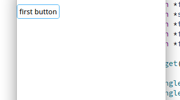

DStackWidget Class
class Dtk::Widget::DStackWidget一个可定制切换动画的容器控件. More...
| Header: | #include <DStackWidget> |
Public Functions
| void | clear() |
| void | currentIndexChanged(int currentIndex) |
| void | currentWidgetChanged(QWidget *currentWidget) |
| void | depthChanged(int depth) |
| QWidget * | getWidgetByIndex(int index) const |
| int | indexOf(QWidget *widget) const |
| void | insertWidget(int index, QWidget *widget, bool enableTransition = true) |
| void | popWidget(QWidget *widget = nullptr, bool isDelete = true, int count = 1, bool enableTransition = true) |
| void | setAnimationDuration(int animationDuration) |
| void | setTransition(Dtk::Widget::DAbstractStackWidgetTransition *transition) |
| void | switchWidgetFinished() |
Detailed Description
DStackWidget 在内容展示方面类似于一个使用了 QStackedLayout 布局的控件, 即在同一个位置展示不同的内容, 但 DStackWidget 提供了 切换内容时的动画效果, 并且可进行自定义动画, 另外 DStackWidget 采用了栈的先入后出理念(不过也并没有完全遵守), 使用 DStackWidget::pushWidget 方法入栈新的内容, 使用 DStackWidget::popWidget 出栈当前内容并显示下层内容(如果有的话), 还有 DStackWidget::insertWidget 可以指定插入的位置.
如果要自定义动画则需要继承 DAbstractStackWidgetTransition, 具体实现可参考 DSlideStackWidgetTransition 类, DSlideStackWidgetTransition 类是 DStackWidget 使用的默认动画即滑动.

Member Function Documentation
void DStackWidget::clear()
移除所有控件(无动画).
void DStackWidget::currentIndexChanged(int currentIndex)
currentIndex 当前索引.
See also DStackWidget::currentIndex.
void DStackWidget::currentWidgetChanged(QWidget *currentWidget)
currentWidget 修改的当前小控件
See also DStackWidget::currentWidget.
void DStackWidget::depthChanged(int depth)
depth 改变的层级大小.
See also DStackWidget::depth.
QWidget *DStackWidget::getWidgetByIndex(int index) const
通过索引获取控件.
index 指定索引 Returns 通过索引找到的控件
int DStackWidget::indexOf(QWidget *widget) const
获取指定控件的索引.
widget 指定的控件 Returns 通过控件找到的索引
void DStackWidget::insertWidget(int index, QWidget *widget, bool enableTransition = true)
在指定的位置插入一个新的内容控件.
需要注意的是如果第一个参数 index 不是栈的最后一个位置将不会显示动画
index 要插入的索引 widget 要插入的控件 enableTransition 是否使用动画
See also DStackWidget::pushWidget.
void DStackWidget::popWidget(QWidget *widget = nullptr, bool isDelete = true, int count = 1, bool enableTransition = true)
出栈指定的内容控件.
如果所有参数都没有指定, 那么将只移除当前的内容控件, 一般是栈顶的控件. 如果指定了参数 widget 那么计数将从控件 widget 在栈中的索引开始往栈顶方向计算移除 count 个内容控件
widget 指定要移除的控件 isDelete 是否删除控件对象 count 指定要移除的控件的数量 enableTransition 是否使用动画
void DStackWidget::setAnimationDuration(int animationDuration)
DStackWidget::setAnimationDuration animationDuration
See also DStackWidget::animationDuration.
void DStackWidget::setTransition(Dtk::Widget::DAbstractStackWidgetTransition *transition)
DStackWidget::setTransition transition
See also DStackWidget::transition.
void DStackWidget::switchWidgetFinished()
当切换一次显示的内容后被调用(动画结束后)